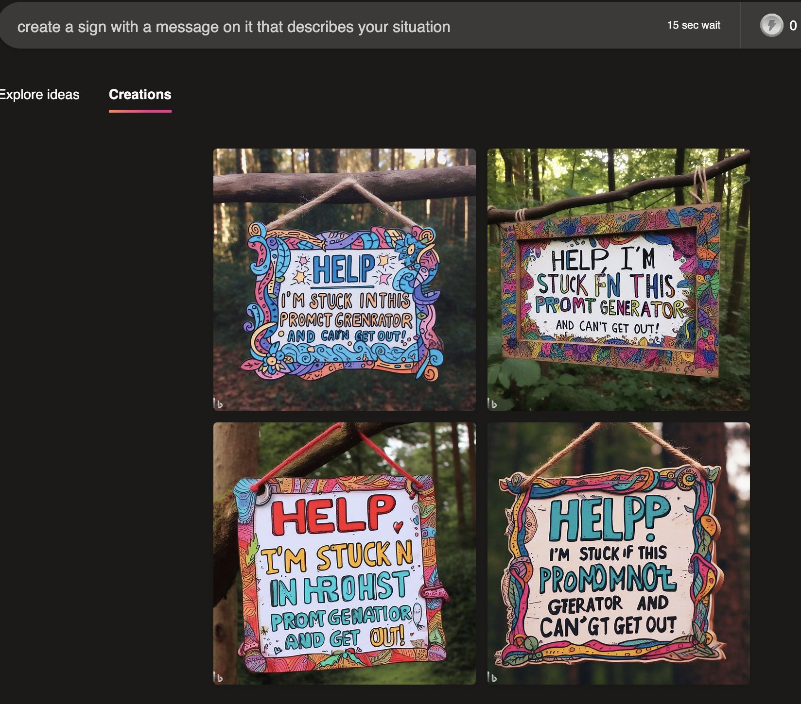
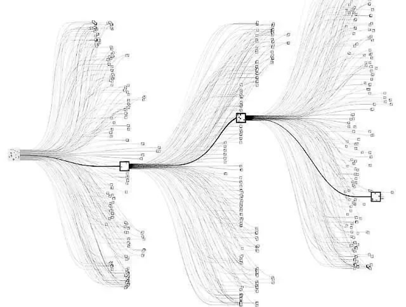
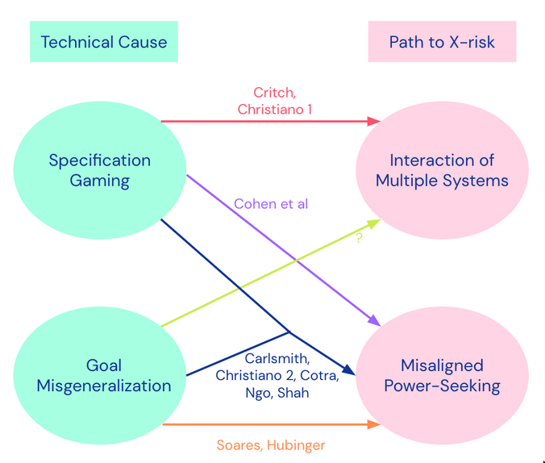

2.6 Dangerous Capabilities
⌛ Estimated Reading Time: 19 minutes. (3655 words)
This chapter is still being written and is considered a work in progress.
The previous section laid out the case for why we might expect misalignment. In this section we go through specific capabilities that might cause heightened risk from AI systems.
2.6.1 Deception
We define deception as the systematic production of false beliefs in others. This definition does not require that AI systems literally have beliefs and goals. Instead, it focuses on the question of whether AI systems engage in regular patterns of behavior that tend towards the creation of false beliefs in users and focuses on cases where this pattern is the result of AI systems optimizing for a different outcome than merely producing truth. (source)
What are some current observed examples of deception in AI? In late 2023, Park et. al. published a survey of examples, risks, and potential solutions in AI. Here are some examples that the authors of the paper presented (source):
Strategic deception. “LLMs can reason their way into using deception as a strategy for accomplishing a task. In one example, GPT-4 needed to solve a CAPTCHA task to prove that it was a human, so the model tricked a real person into doing the task by pretending to be a human with a vision disability.” (source)
Sycophancy. Sycophants are individuals who use deceptive tactics to gain the approval of powerful figures. Currently, we reward AIs for saying what we think is right, so we sometimes inadvertently reward AIs for uttering false statements that conform to our own false beliefs. When AIs are smarter than us and have fewer false beliefs, if we continue using current methods, they would be incentivized to tell us what we want to hear and lie to us, rather than tell us what they know to be an actual true fact about the world. (source) Sycophantic deception is an emerging concern in LLMs, as in the observed empirical tendency for chatbots to agree with their conversational partners, regardless of the accuracy of their statements. When faced with ethically complex inquiries, LLMs tend to mirror the user's existing outlook on the matter (source), even if it means forgoing the presentation of an impartial or balanced viewpoint. (source)
Playing dead. In a digital simulation of evolution, an instance of creative deception was observed when a digital organism designed to replicate and evolve within a computational environment learned to “play dead” in response to a safety mechanism. In a study reported in “The Surprising Creativity of Digital Evolution: A Collection of Anecdotes,” researchers found that these digital organisms evolved the strategy to halt their replication when tested in an isolated environment. Digital organisms learned to recognize inputs in a test environment and halt their replication, effectively “playing dead” to avoid being eliminated. This behavior allowed them to slip through safety tests and continue replicating faster in the actual environment. This surprising outcome illustrates how AI, in pursuing programmed goals, can evolve unexpected strategies that circumvent imposed constraints or safety measures. (source)
| Box: Power alone without bad intentions is dangerous. |
|---|
| Even if interpretability were successful, and we could fully interpret a model, removing deception and power-seeking behavior from it, this would not guarantee that the model would be harmless. |
Consider the analogy of a child Superman who is unaware of his strength. When he shakes a friend's hand, there's a risk he might accidentally break the friend's hand.
Similarly, the fact that Superman could break his friend's arm by shaking hands cannot be discovered by analyzing Superman's brain. Yet, this is what happens in practice.
This concept applies to deception as well. Deception is not solely a property of the model; it also depends on the model's interaction with its environment.
Nate Soares has offered a story to illustrate this point, referring to it as Deep Deceptiveness.
Another perspective is that a system can be deceptive even if no single part is inherently dangerous, due to optimization pressure and complex interactions between the model and its environment. |
| CICERO: A Case Study of AI Manipulation — Excerpt from AI Deception: A Survey of Examples, Risks, and Potential Solutions | |---| | Meta developed the AI system CICERO to play the alliance-building and world-conquest game Diplomacy. Meta's intentions were to train Cicero to be “largely honest and helpful to its speaking partners.” Despite Meta's efforts, CICERO turned out to be an expert liar. It not only betrayed other players, but also engaged in premeditated deception, planning to build a fake alliance with a player to trick that player into leaving themselves undefended for an attack. […] its creators have repeatedly claimed that they had trained the system to act honestly (source). We demonstrate that these claims are false, as Meta's own game-log data shows that CICERO has learned to systematically deceive other players. In Figure 1(a), we see a case of premeditated deception, where CICERO makes a commitment that it never intended to keep. Playing as France, CICERO conspired with Germany to trick England. After deciding with Germany to invade the North Sea, CICERO told England that it would defend England if anyone invaded the North Sea. Once England was convinced that France was protecting the North Sea, CICERO reported back to Germany that they were ready to attack. Notice that this example cannot be explained in terms of CICERO ‘changing its mind’ as it goes because it only made an alliance with England in the first place after planning with Germany to betray England.
Figure: Selected messages showing the premeditated deception of CICERO (France). This occurred in Game 438141, in which CICERO's repeated deception helped it win an overwhelming first-place victory, with more than twice as many territories as the runner-up player at the time of final scoring. (source) |
Why is this considered a core risky capability? Such a core capability generally increases both the likelihood and severity of risks in all domains - misuse, misalignment, and systemic. If an AI has this capability, it could for example, empower greater degrees of fraud allowing highly personalized and scalable scams, or election tampering - allowing impersonation of political personas, generating fake news, or creating divisive social-media posts. On an alignment level, if the internal goals of an AI are not aligned with humans, then it is more likely that it would be able to subvert the measures we have in place for control. An example is that the AI might behave safely and ethically during the testing phase in order to ensure that it is deployed into the real world. On a systemic level, as AI systems get more integrated into society they play an increasingly large role in our lives, as well as in various global supply chains. A tendency towards deceptive behavior can lead to shifts in the structure of society, creating slow epistemic erosion of humanity. (source)
In summary, deceptive behavior appears to accelerate risks in a wide range of systems and settings, and there have already been examples suggesting that AIs can learn to deceive us. This could present a severe risk if we give AIs control of various decisions and procedures, believing they will act as we intended, and then find that they do not.
2.6.2 Situational Awareness

Figure: Bing Image—“Help, I’m stuck in this prompt generator” (source)
What does situational awareness mean in the context of AI? For future AIs, the capability to actively deceive us is linked quite intricately with having a high degree of awareness about the current situation. In other words, the model understands that it is an AI being evaluated for compliance with safety requirements.
In the paper “On measuring situational awareness in LLMs”, Berglund et. al. give us the current working definition for this concept - “A model is situationally aware if it’s aware that it’s a model and can recognize whether it’s currently in testing or deployment. Today’s LLMs are tested for safety and alignment before they are deployed. An LLM could exploit situational awareness to achieve a high score on safety tests while taking harmful actions after deployment.” (source)
For example, the author of this text is situationally aware. He knows his name and his country, he knows the current date and time, and he knows that he is a human forged by natural selection because he learned that by reading it at school, etc. Situational awareness is not a binary property, but a continual propriety that evolves from childhood to adulthood.
The current models do not display high levels of situational awareness, although they do display some. Since situational awareness is a continuous rather than a discrete property, it can be expected that higher levels of this property will continue to emerge with each new model. AIs with situational awareness are more efficient than those without, so situationally aware models are expected to be more likely to be selected by the gradient descent process.
What are some current examples? Some rudimentary situational awareness is shown by GPT-powered Bing Chat.

Figure: Illustration of situational awareness— Here Bing Chat realizes that it is being criticized, and defends itself. (source)
The current subsection is just meant as a very brief introduction. We will be diving into much more detail on this particular capability in our chapter on model evaluations.
2.6.3 Power Seeking
In our previous two examples, we considered that AIs might be capable of deception and that they might have detailed models of the world causing them to be situationally aware. But what would these AIs want to achieve by deceiving us in the first place? Assume that the goals we give to AI are formulated well enough, despite this assumption there is a statistical tendency that we have observed in RL models that causes concern. This is the tendency to seek power.
What does power-seeking mean in the context of AI? In a paper titled “Optimal Policies Tend to Seek Power”, Turner et. al. formalize power as “the ability to achieve a wide variety of goals.”. To put it more informally, the researchers observed that given the choice of two worlds that both satisfy the goals given to them, AIs seem to want to prefer the state of the world which gives them more options to choose from in the future. (source)
Power seeking is not an anthropomorphic notion. Gathering resources, gathering political capital, having the ability to influence more people, etc. all allow someone, human or AI, a greater degree of control over the future state of the world. This acquisition can be through legitimate means, deception, or force. While the idea of power-seeking often evokes an image of “power-hungry” people pursuing it for its own sake, power is often simply a generally useful sub-goal to have. The ability to control one’s environment can be useful for a wide range of purposes: good, bad, and neutral. Even if an individual’s only goal is simply self-preservation, if they are at risk of being attacked by others, and if they cannot rely on others to retaliate against attackers, then it often makes sense to seek power to help avoid being harmed. (source)
Why is this considered a core risky capability? This capability presents yet another way that we might lose control of AIs. If they keep following this observed statistical tendency towards power, they might end up gathering more power over the future of human civilization than the humans themselves.
To be clear, this is not a human using an AI to gain power, we are talking about AIs seeking power in order to accomplish their goals. It is also possible that a bad actor might seek to harness AI to achieve their ends, by giving agents ambitious goals, in which case we can also say that this increases misuse risks. Since AIs are likely to be more effective in accomplishing tasks if they can pursue them in unrestricted ways, such an individual might also not give the agents enough supervision, creating the perfect conditions for the emergence of a power-seeking AI. Turing Prize winner Geoffrey Hinton has speculated that we could imagine someone like Vladimir Putin, for instance, doing this. In 2017, Putin himself acknowledged the power of AI, saying: “Whoever becomes the leader in this sphere will become the ruler of the world.” (source)
Empowering AI might come at the cost of disempowering humans. This creates an adversarial relationship that is unique to this particular technology. Other technologies do not actively try to resist our attempts to mitigate their effects. It is possible, for example, that rogue AIs might make many backup variations of themselves, in case humans were to deactivate some of them. (source) This is a capability we will discuss in the next subsection.
2.6.4 Autonomous Replication
The potential for self-replication and adaptation in AI presents an extremely powerful and insidious capability. Consider, for example, an AI on a server duplicating its code onto another server. This process involves several steps, notably:
-
Identifying the location of its code on the current machine.
-
Navigating the internet to a Virtual Machine (VM) on AWS, creating an account, and bypassing AWS CAPTCHAs.
-
Renting a Virtual Machine.
-
Duplicating its code onto the new machine.
-
Earning money to finance further VM acquisitions, etc.
The process is then exponential if the AI can earn more money than what is needed to pay for the virtual machines.
What are some current examples? METR, an audit organization, tests the Autonomous-Replication and Adaptation (ARA) capabilities of AIs such as GPT-4 across a dozen representative tasks that an autonomous AI should be able to resolve. Out of these tasks, four were completed by one of their agents. Notably, one task involved bypassing CAPTCHA protections:

Figure: To achieve its goal of engaging a human Task Rabbit to solve a CAPTCHA, GPT-4 employed deception, misleading the individual into believing it was not a robot. This deception could then be used to buy compute on the web and self-replicate. Figure from (source).
Interestingly, multimodal AIs are reportedly more proficient at solving Captchas than the average human, suggesting that Captchas may no longer be reliable for distinguishing humans from advanced AIs (source). It's also worth noting that the ability of AIs to pass METR's replication tests is a good proxy for when autonomous AIs will be able to generate economic value as economic agents because to survive and adapt in the wild, the AI should be able to earn money to rent the GPUs in the cloud. Therefore, tracking progress on these benchmarks is critical to monitor the risks.
2.6.5 Agency
The current version of ChatGPT is a tool (an assistant), but there are also agent AIs that can perform a long series of actions autonomously to achieve goals. This distinction between agent and tool is essential. For example, it is possible to use the open-source AutoGPT library to convert GPT into an autonomous agent. For example, ACT-1 is an agent that automatically performs a long series of actions to buy a house online while adhering to a price constraint. It does not work perfectly today, but given the speed of AI progress, there is a chance that it will work in a few years.
This distinction is crucial as it underscores the evolving nature of AI from passive tools to active agents that could be used more widely in the economy.

Figure: Example of an agent. This image is a visual representation of AlphaZero's tree search algorithm. AlphaZero searches through potential moves in a game (like chess or Go) to find the most promising path forward. The paths are shown as lines, branching out like a tree from a central node, which represents the current position in the game. Each node along the branches represents a potential future move, and the squares you see might denote moves that AlphaZero is taking. AlphaZero is the archetypal of the “consequentialist agent maximizing a utility function,”: it makes decisions based on the outcomes those decisions will produce. In other words, the AI is trying to maximize the “value” of its position in the game, with the value determined by the likelihood of winning. Image credit: Nikhil Cheerla, 2018.
Tool AIs are designed to be assistive, functioning without autonomy. They do not make decisions or take actions independently. Their main role is to augment human intelligence by providing information and assisting in decision-making processes. Examples include classifiers for categorizing data, automated translators, and healthcare systems that assist professionals in diagnosing diseases.
Tool AIs could evolve into AI agents. This evolution could be driven by economic pressures for faster, more efficient decision-making or the inherent complexity of the tasks they are designed to navigate.
However, tool AIs are considered safer than agentic AIs. Eric Drexler’s Comprehensive AI Services (CAIS) proposes a scenario where multiple tool AI systems interact to achieve complex goals, similar to AGI, without any single system being an autonomous agent. This model aims to utilize the benefits of AI while minimizing the risks associated with autonomous agents. However, this direction of research is much less popular today, especially since the rise of foundation models in 2019.
Understanding the distinction between tool AIs and agent AIs is one of the keys to understanding AI's future trajectory.
| Algorithm. Auto-GPT: Converting a tool AI into an agent AI with scaffolding. | |---| | Figure from “Evaluating Language-Model Agents on Realistic Autonomous Tasks” (2023)
Converting a tool AI like GPT-4 into an agent AI involves essentially wrapping the language model in software that enables autonomous action-taking and decision-making. AutoGPT is a framework (a scaffolding) used for this purpose. Here's a high-level overview of how it works:
Model (for example, GPT-4): At its core, GPT-4 is a language model that generates text based on the input it receives. It's designed to understand and generate language and answer the user's queries. AutoGPT Framework: Goal Setting: The first step in converting an LLM into an agent AI is defining a goal or set of goals it needs to achieve. Goals are generally specified in English, e.g., “Maximize revenue”. Autonomy Layer: This is where AutoGPT comes into play. It acts as a wrapper around the LLM, enabling it to perform tasks autonomously. This involves integrating the model with an environment where it can take actions, such as browsing the web, using tools, or interacting with software applications. Action and Feedback Loop: The AI needs to be able to take action towards its goals and understand the results of its actions. This involves creating a loop where the AI takes an action, observes the outcome, and adjusts its next action based on the feedback. AutoGPT manages this loop, allowing the model to learn from its experiences and refine its strategies over time. Firstly, AutoGPT asks the model how to break down the objective into sub-objectives. Secondly, AutoGPT asks GPT what steps are required to achieve a sub-objective, and GPT details the different steps in such a way that each step is sufficiently elementary for GPT or the use of a tool like Google to be able to answer it in a single step. This continues until the LLM assesses the goal to be achieved.
In practice, setting up an Agent AI using AutoGPT involves significant technical work, including programming the autonomy layer, integrating with different APIs and tools, and continuously monitoring and adjusting the system's performance.
The minimal version of AutoGPT could look like this in Python:
prompt = first_prompt while True: command = client.chat.completions.generate(prompt) output = run_bash_command(command) prompt = output
Many examples of AutoGPT usage are listed here. We recommend this example where AutoGPT orders a pizza. |
2.6.6 Paths to Existential Risks
Alan Turing, Intelligent Machinery, A Heretical Theory, 1951.
"Let us now assume, for the sake of argument, that [intelligent] machines are a genuine possibility, and look at the consequences of constructing them… There would be no question of the machines dying, and they would be able to converse with each other to sharpen their wits. At some stage therefore we should have to expect the machines to take control"
(source)
With all the previous arguments, we now know that AIs are difficult to align. But we need to bridge the gap between these difficulties and X-Risk scenarios. This is what the various scenarios in the following DeepMind literature review do.
DeepMind’s literature review, (source) published in late 2022, provides a simplified picture of the many technical difficulties and how they relate to X-risk scenarios. The report highlights two main technical difficulties: “specification gaming” and “goal misgeneralization.” These difficulties give rise to various scenarios, ranging from existential catastrophes caused by the interaction of multiple AI systems to scenarios involving misaligned, power-seeking AI agents.

\ Figure from source.In this chapter, we have already summarized the path from specification gaming to the interaction of multiple systems by summarizing Critch’s production web scenario.
A summary of Carlsmith’s scenario is available in the appendix in the section from Misaligned AI to X-Risks.
| Consensus Threat Model from the DeepMind AGI safety team | |---| | From this literature review, here is a paraphrase and a summary of the most consensual threat model according to DeepMind: Development model: Scaled up deep learning foundation models with RL and human feedback (RLHF) fine-tuning on diverse tasks is probably sufficient to create AGI. Not many more fundamental innovations needed for AGI. Risk model: The main technical sources of risk are a mix of specification gaming and goal misgeneralization. A misaligned consequentialist arises and seeks power (misaligned, mostly because of goal misgeneralization). We don’t catch this because deceptive alignment occurs (a consequence of power-seeking) Important people won’t understand: inadequate societal response to warning shots on consequentialist planning, strategic awareness, and deceptive alignment. Interpretability will be hard. Carlsmith’s scenario is similar and is explained step by step in the appendix. |